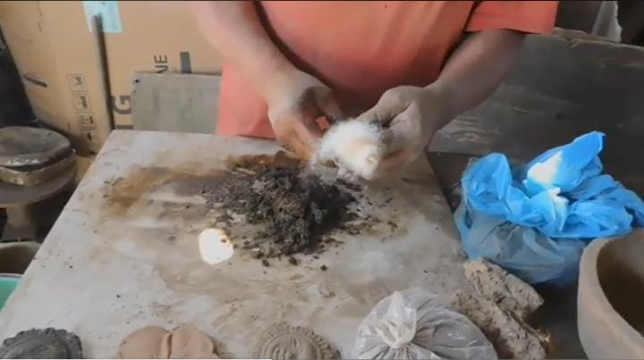
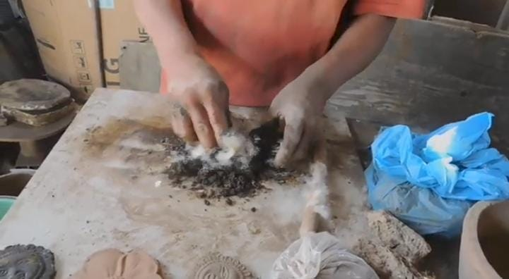
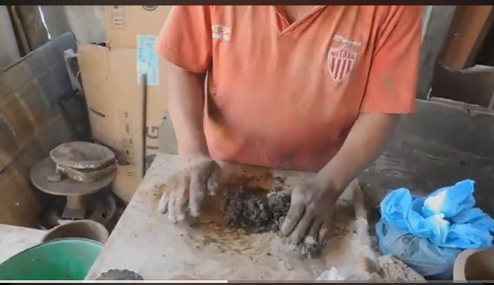
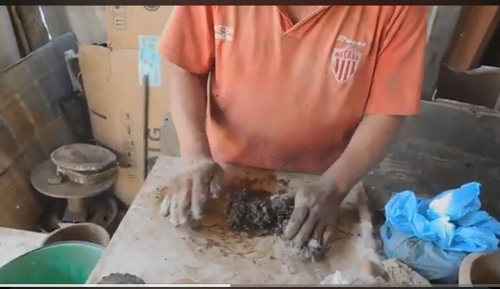
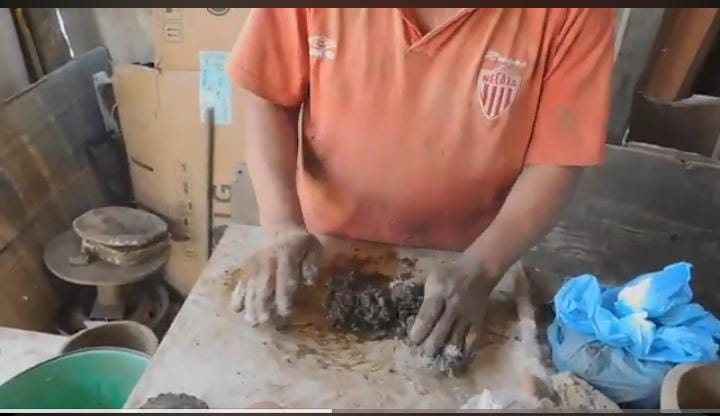

ELABORACIÓN
1) Se rasca más de metro 1/2 de profundidad en tierras virguenes
especiales para los alfareros y se extrae el barro en su forma original(terron)
y se trae en costales al taller.
2) Se dejan secar los terrones y se remuelen con una piedra que pesa 80kg y
en este mismo proceso se van eliminando piedras y otras basuras que puedan afectar a la artesania.
3)Una vez remolido el barro se cierne con una tela de mosquitero para que se obtenga una fina arenita la cual se ocupa también como mascarilla esfoliante.
4)Al tener el barro ya cernido se le va virtiendo agua y mezclando hasta obtener una masa entre seca y humeda.Esto para que el siguiente elemento pueda hacer bien su función.


 


5) Al tener la masa casi mezclada al 100% se le pone una planta llamada plumilla la cual hará que nuestra masa tenga consistencia y pueda manipularse mejor.
6)Después se mezcla completamente bien la masa hasta que los elementos queden unidos y ya puedes hacer tu alfareria que se secará en sombra y se quemará en el horno y en caso de las casuelas son dos horneadas.
Dirección: Calle Leandro Valle s/n Barrio de Texcalpan ,Tlayacapan,Mor.
Num.Tel: 7352816315-jiovany allende